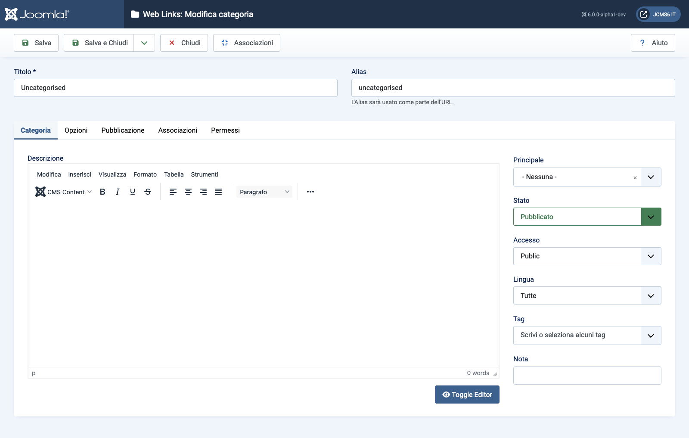

Joomla Help Screens
Link Web: Modifica Categoria
Descrizione
La pagina Web Links: Modifica Categoria viene utilizzata per creare una nuova Categoria o modificarne una esistente. Nota che devi creare almeno una Categoria di Collegamenti Web prima di poter creare un Collegamento Web. Inoltre, le Categorie di Collegamenti Web sono separate da altri tipi di Categorie, come quelle per Articoli, Banner e Feed di Notizie.
Elementi Comuni
Alcuni elementi di questa pagina sono trattati in articoli di aiuto separati:
- Barre degli Strumenti.
- La Scheda Opzioni.
- La Scheda Pubblicazione.
- La Scheda Associazioni.
- La Scheda Permessi.
Come Accedere
- Seleziona Componente → Link Web → Categorie dal menu Amministratore. Poi...
- Seleziona il pulsante Nuovo nella Toolbar per aggiungere una nuova Categoria. Oppure...
- Seleziona un Titolo dalla colonna Titolo dell'elenco per modificare una Categoria esistente.
Screenshot

Campi del Modulo
- Titolo Il titolo per questo elemento. Potrebbe o meno essere visualizzato sulla pagina, a seconda dei valori dei parametri che scegli.
- Alias Il nome interno dell'elemento. Normalmente puoi lasciare questo campo vuoto e Joomla riempirà un valore predefinito con il Titolo in minuscolo e con i trattini al posto degli spazi.
Scheda Categoria
Pannello sinistro
- Descrizione La descrizione dell'elemento. Le descrizioni di Categoria, Sottocategoria e Collegamento Web possono essere visualizzate sulle pagine web, a seconda delle impostazioni dei parametri.
Tradotto da openai.com